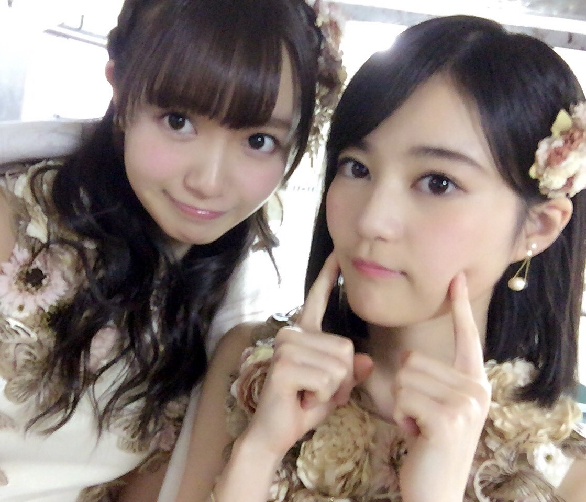
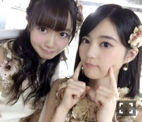
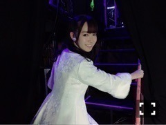
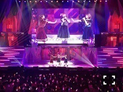
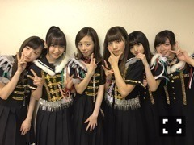

| 2016/12 10 Sat | 中元日芽香 ひめたん-0o0-その688 |
◯乃木坂46の「の」
◯らじらー！サンデー
◯第49回日本有線大賞
◯FNS歌謡祭2016 第一夜
◯乃木坂46 Merry Xmas Show 2016
ありがとうございました！
有線大賞では
RADIO FISHさんとのコラボが実現！
乃木坂からは生駒、西野、中元で
「PERFECT HUMAN」
踊りました！
その前日、らじらーのブログで
みんなでランニングマンしてる写メが
アップされたのですが
あれはらじらースタッフが仕掛けました。笑
明日になればわかるよね～と言いながら
ニヤニヤしてました。流石チームらじらー。
RADIO FISHの皆さん
ありがとうございました( ˇωˇ )

写真はFNS。
いくちゃんコラボお疲れ様～～
「サヨナラの意味」披露しました。
飛天でのFNSは個人としては
「バレッタ」以来でした。
来週第二夜も観てください！
クリスマスライブ。
来てくださった皆さん、
応援して下さった皆さん
本当にありがとうございました。

開演数十秒前の私。
選抜単独ライブでは、
一人一曲プロデュースする企画がありました
メンバーそれぞれの個性が出てて
濃ゆいものばかりで楽しかったのですが
そんな中で私は
「行くあてのない僕たち」を
万理華と小百合と3人で披露しました！
選曲、演出、衣装等々
ワガママ全部叶えて頂きました。
あの工事中オンエアから早一年、
今作、初めて三人揃って選抜入りできて
握手会とかコメントで
たくさんの方が喜んでくださったんですね。
なのにいざ活動が始まると
なかなか目に見えて絡む機会ないな～と。
だからここで、
選抜単独ライブという特別な場所で
レスポンスとしてパフォーマンスできたら
素敵だなと思って今回提案してみました。
っていうのがひとつと
あとは単純に、
この二人と歌いたかった。笑
いつもコントに走りがちですが
今回は真剣にパフォーマンスを魅せたいと。
オンオフの差が激しい私たちだからこそ
全力でオンになった時の三人の温度が
歌ってて最高に気持ちよかったです。
一緒にライブはたくさんやってるからね、
かっこいい顔を知ってるからこそ
パッとイメージが沸きました
これは絶対良いものになるぞって。
万理華、小百合、ありがとう！

そしてもう一つは乃木團！
これは9日のアンダーライブに
乃木團としてお邪魔して
乃木團×乃木坂46という初のコラボ。
乃木坂ロックメドレー！
レパートリーが一気に増えました～
昨日の模様は12/23のスカパー！で
オンエアされると思うので
是非観てください( ˇωˇ )

新生乃木團！
やっと写真撮れた！
～お知らせ～
雑誌
12/12 週刊ヤングマガジン
12/13 TVstationお正月号
12/15 月刊ザテレビジョン年末年始号
WEB
12/7～ ソニトピ
TV
12/14 FNS歌謡祭2016 第ニ夜
12/16 堂本兄弟もうすぐクリスマスSP
12/23 乃木坂46 Merry Xmas Show 2016
12/23 Mステスーパーライブ2016
12/31 第67回NHK紅白歌合戦
ライブ
2/20 5th YEAR BIRHTDAY LIVE
2/21 5th YEAR BIRHTDAY LIVE
2/22 5th YEAR BIRHTDAY LIVE
発売中のTop Yellでは
短歌に挑戦したのですが
先生はなんと加藤千恵さん！
以前、ブックフェアで紹介させて頂いた
「ラジオ！ラジオ！ラジオ！」の筆者さん！
こうして一緒にお仕事できるとは。
執筆活動されてたり、
ラジオで話す側も聞く側も経験されてて
日常で言葉に触れているからでしょうか、
素敵な響きのフレーズがポンポン出てきて
私もこんなふうになれたら
いいな～と改めて尊敬しました。
ありがとうございました。
是非紙面でチェックしてみて下さいね！
ソニトピ～～
1ヶ月限定でじょ～んおひめコンビ復活！
ユルさに拍車がかかってます( ˆωˆ )
毎週更新されるよ～

おやすみなさい～
(＊´・ω・＊)